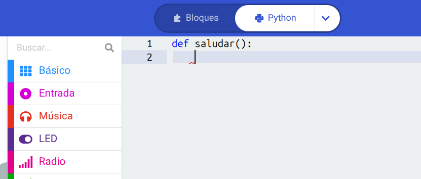
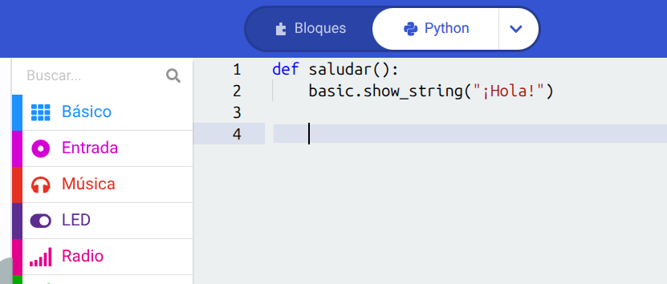
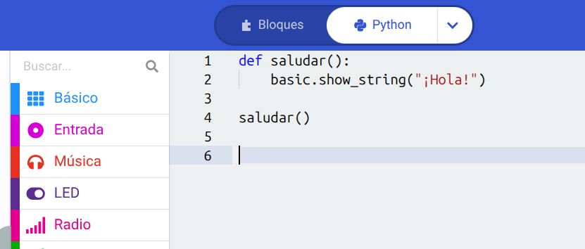
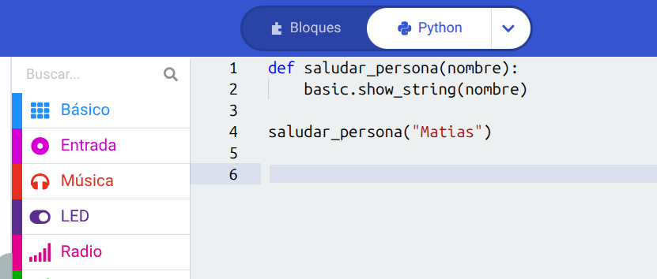

🛠️ ¿Qué son las funciones y cómo usarlas en Python?
🛠️ ¿Qué son las funciones y cómo usarlas en Python?
¡Buenas! Ya sabés mostrar texto, usar variables y resolver problemas. Hoy vamos a ver la herramienta definitiva para no escribir código de más y tener todo ordenado: las funciones.
Pensá en una función como una receta de cocina o un "combo" de un videojuego. Es un grupo de líneas de código que guardás bajo un nombre. Cada vez que necesitás que se ejecute todo ese combo, en vez de volver a escribir línea por línea, simplemente llamás al nombre de la función. ¡Te ahorrás un montón de trabajo!
Pasos a seguir
1. Definir nuestra primera función
Para crear una función en Python se usa la palabra mágica def (que viene de define en inglés), seguida del nombre que le quieras dar y dos puntos (:). Vamos a crear una función que salude. Escribí en el renglón 1:
def saludar():

2. Escribir el "combo" adentro (La indentación)
Ahora tenemos que poner qué va a hacer nuestra función. Todo lo que vaya adentro de la función tiene que llevar un espacio de sangría (tabulación) a la izquierda. Así Python sabe qué comandos pertenecen a la receta. Vamos a hacer que muestre un texto. Escribí abajo:
def saludar(): basic.show_string("¡Hola!")

3. Llamar a la función (Ejecutar el combo)
Si le das al play al simulador ahora mismo, ¡no va a pasar nada! ¿Por qué? Porque la receta está guardada en el libro, pero todavía no la cocinaste. Para que el código se ejecute, tenés que "llamar" a la función por mi nombre, afuera de ella (sin sangría). Agregá esta línea al final del todo:
saludar()

4. Funciones que reciben datos (Parámetros)
Lo más potente de las funciones es que podés pasarle "ingredientes" para que hagan cosas distintas. Esos ingredientes van adentro de los paréntesis y se llaman parámetros. Mirá este ejemplo:
def saludar_persona(nombre): basic.show_string(nombre)
saludar_persona("Matias")
¡La función se adapta al nombre que vos le tires!

5. ¡A probar el simulador!
Mirá la pantalla de tu micro:bit a la izquierda. Al llamar a la función, el código se activa y el saludo pasa de corrido por los LEDs. ¡Acabás de automatizar tus primeros bloques de código como un programador avanzado!
💡 Tip Pro: Las funciones son clave para mantener el código limpio. Si en tu código vas a mostrar un corazón parpadeando diez veces en distintos momentos, no copies y pegues las mismas líneas diez veces. Creá una función que se llame mostrar_corazon() y llamala cada vez que la necesites. ¡Código corto y elegante!